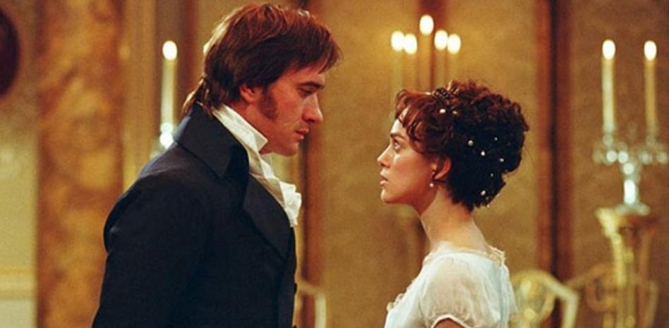
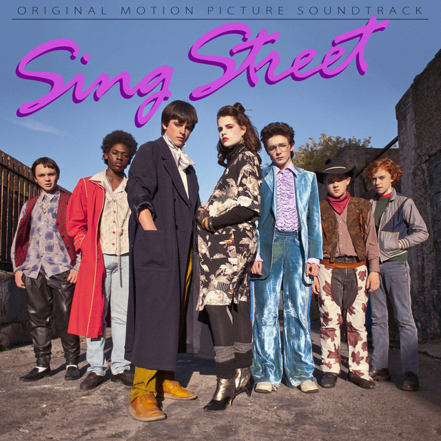
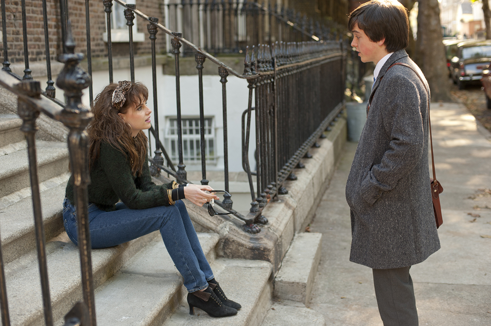

Imagen simple (película favorita 1)
La novela de Orgullo y Prejuicio es una de mis novelas favoritas, al igual que su autora Jane Austen. Considero que la adaptación del 2005 es de las mejores que se ha hecho de esta novela, volviéndose una de mis películas favoritas. Se convirtió en esa película que veo cuando quiero relajarme y distraerme, su fotografía y soundtrack me parecen muy cálidos e ideales para la historia. Debo recalcar que todas las actuaciones me parecen muy buenas, sobre todo la de los protagonistas, al igual que el vestuario. Es muy fiel al libro, a pesar de omitir ciertas partes y cambiar pequeños detalles la esencia de la novela está ahí, el sentido del humor que caracteriza a Jane Austen se representa de manera idónea, con personajes complejos y críticas a la sociedad que aun prevalecen en la era moderna.
Imagen gif (película favorita 2)
Chicas Pesadas (2004), también es de mis películas favoritas, la talentosa Tina Fey escribió un guion lleno de comedia, el cual me hace reír cada vez que veo la película, remarcando que la he visto más de 10 veces a lo largo de mi vida, haciendo que cada vez que la vea aprecie más detalles. El soundtrack es muy bueno, siendo una película que con 20 años de su estreno no ha envejecido de mala manera, es decir, la bromas no son inadecuadas, volviéndose una película memorable que sigue siendo popular hoy en día, habiendo mercancía y memes de la película. Otra cosa que me gusta de la película es el elenco, todo el elenco pienso que hizo un trabajo perfecto, brindando personajes entrañables y únicos. Se volvió en esa película que no importa el ánimo, siempre me pone de buen humor, disfruto verla al menos una vez al año mientras paso un buen momento.
Imágenes flotantes izquierda y derecha (película favorita 3)
 Sing Street (2016) es considera un musical, y debo decir que es mis musicales favoritos, a pesar de que no es un musical como las personas se lo imaginan, la música en esta película se siente tan orgánica y parte esencial de la película. La película está ambientada en los 80’s en Irlanda, por lo que el soundtrack son de bandas populares por aquella década, teniendo clásicos de los 80’s. Una cosa que me encanta de la película es que el protagonista va explorando quien es en plena adolescencia, enamorarse por primera vez y descubrir que tiene voz propia, al mismo tiempo que se plantea sus sueños y planes. En el transcurso de esto forma una banda, que en un inicio fue para impresionar a una chica, esta banda va adoptando estilos diferentes de bandas icónicas de los 80’s como The cure, Duran Duran, The Jam, Darly Hall y John Oates, reflejados en el vestuario y canciones propias de la película.
A pesar de que la película ya tiene muchos años que la vi por primera vez, se ha mantenido en mis películas favoritas, he crecido y veo desde otra perspectiva la historia, sin embargo, se volvió de esas películas que uno ve en días triste o donde necesitas animarte de manera tranquila, además de disfrutar todas las canciones y regresar a lo retro, a pesar de no haber vivido en esa época, la siento cercana.
La narrativa de crecer me parece muy adecuada y cercana de cierto modo a mi yo adolescente, recordándome cada vez que la veo los sueños y esperanzas que tenía una versión de mí, volviéndose una película que esta cercana a mi corazón. Me encantan todos los vestuarios, el maquillaje de un personaje principal femenino, al igual que los personajes principales, teniendo una química especial y personalidades que me robaron el corazón. Desde mi perspectiva tiene un final emocional que me deja reflexionando acerca del costo de perseguir tus sueños, y la esperanza que se tiene cuando uno es joven, así como la incertidumbre de crecer y avanzar a las diferentes etapas de la vida. Una película que recomendaría a cualquier persona sin necesidad de ser adolescente, emotiva, divertida y con las mejores bandas sonoras que he escuchado y apreciado.
Imagen de fondo
Alicia en el país de las maravillas (2010) es de mis películas favoritas liveaction de Disney, me parece una gran adaptación llena de magia. Esta película me gusta mucho porque nada parece ser lo que es, tiene unos efectos especiales que parece todo natural. Una historia en la que una joven decide ir tras su instinto y descubre un camino lleno de aventuras y desafíos, en donde tiene que demostrar la valentía que siempre ha tenido y le faltaba traerla de vuelta, una película que me inspira a creer que puedo hacer cosas que me parecen imposibles, es decir, que puedo luchar contra mis propios obstáculos. Cuenta con una música que me gusta mucho, y la canción principal es de Avril Lavigne, una cantante que me gusta y creo compone muy bien. Considero que en esta película Tim Burton demuestra el talento que tiene, y toda la magia que puede hacer el cine, siempre he pensado que esta película se tiene que ver con la mente y corazón abiertos, y no solo tomar por una película llena de incoherencias.
Además, me recuerda a mi infancia y como me gustaba soñar con aventuras así, una de mis frases favoritas es:
“Solo unos pocos encuentran el camino, otros no lo reconocen cuando lo encuentran, otros ni siquiera quieren encontrarlo...”
La segunda parte se me hace igual de buena, ahora trayendo desde una nueva perspectiva la historia que ya se conoce, explicando el origen de algunos personajes y el porqué de las acciones de cada uno de ellos. Nuevos temas, nuevas aventuras que Alicia tiene que afrontar, en donde una vez más, tiene que demostrar quién es y toda la valentía que tiene para defender sus ideales. Una frase que me gusta de esta película es:
“Antes pensaba que el tiempo era un ladrón que me robaba todo lo que amaba; ahora veo que da antes de quitar y que cada día es un regalo”
Imagen que redirige (películas de Disney)
En cuanto a películas animadas, la franquicia que tiene desde mi punto de vista las mejores películas animadas de Disney. Unas de mis favoritas son: La Bella y la Bestia, Mulan, Enredados, Peter Pan, El Rey León, El Extraño Mundo de Jack, entre otras. Ahora con la plataforma es más sencillo que tenga acceso a estas películas, y las pueda disfrutar cuando yo quiera, sobre todo cuando hago tareas y pongo de fondo estas películas. El icono del castillo de Disney redirige a la página oficial, para que se pueda apreciar todo su catálogo.
Imágenes con filtro (película favorita 4)
Cuestión de tiempo (2014) es otra de la lista de mis películas favoritas, a excepción de las demás, a pesar de que me encanta no la veo tan seguido porque el final siempre me hace llorar y me deja algo emocional, entonces la veo cada tanto, porque de igual manera paso un buen rato viéndola. Esta película narra una historia sencilla de la vida cotidiana de una persona con un toque especial y mágico, que me hace reflexionar acerca de los momentos que paso día a día, que no se repetirán y como de alguna manera la vida tiene diferentes momentos. Y como no puede faltar, la música de esta película es ideal para cada escena, además de incluir una de las canciones más románticas que he escuchado, la cual es How Long Will I Love You, siempre la recomiendo para pasar un buen rato.